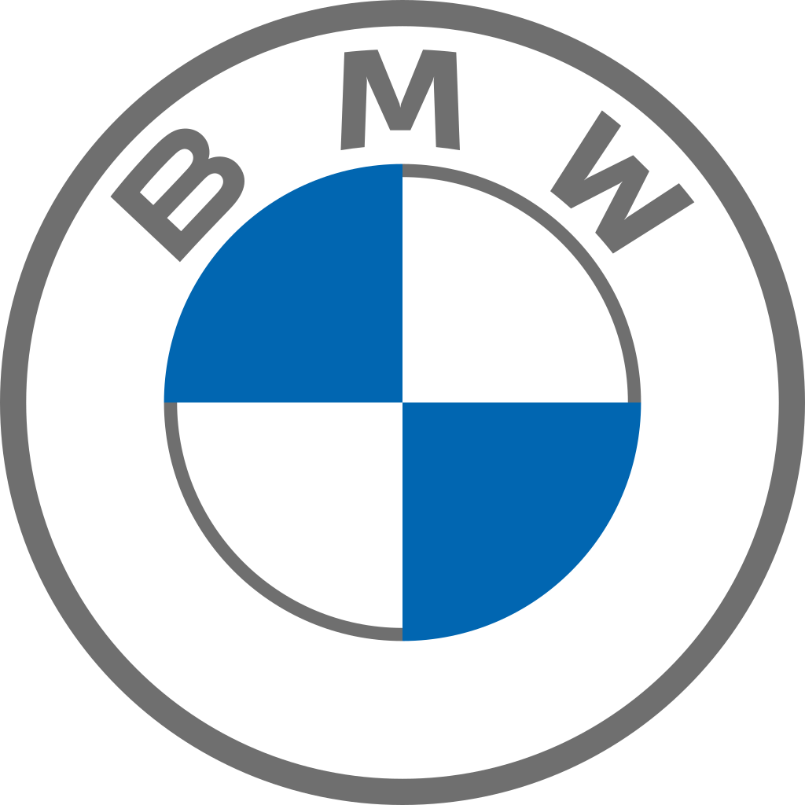

 Bayerische Motoren Werke AG, abbreviated as BMW, is a German multinational manufacturer of luxury vehicles and motorcycles headquartered in Munich, Bavaria. The corporation was founded in 1916 as a manufacturer of aircraft engines, which it produced from 1917 until 1918 and again from 1933 to 1945.
Automobiles are marketed under the brands BMW, Mini and Rolls-Royce, and motorcycles are marketed under the brand BMW Motorrad. In 2017, BMW was the world's fourteenth-largest producer of motor vehicles, with 2,279,503 vehicles produced.
The company has significant motor-sport history, especially in touring cars, sports cars, and the Isle of Man TT. BMW is headquartered in Munich and produces motor vehicles in Germany, Brazil, China, India, Mexico, the Netherlands, South Africa, the United Kingdom, and the United States. The Quandt family is a long-term shareholder of the company, following investments by the brothers Herbert and Harald Quandt in 1959 which saved the company from bankruptcy.